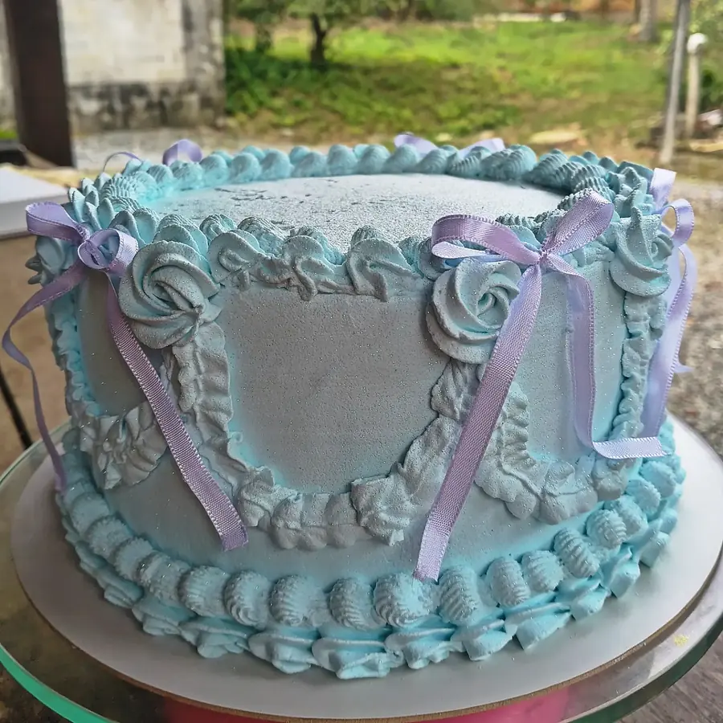
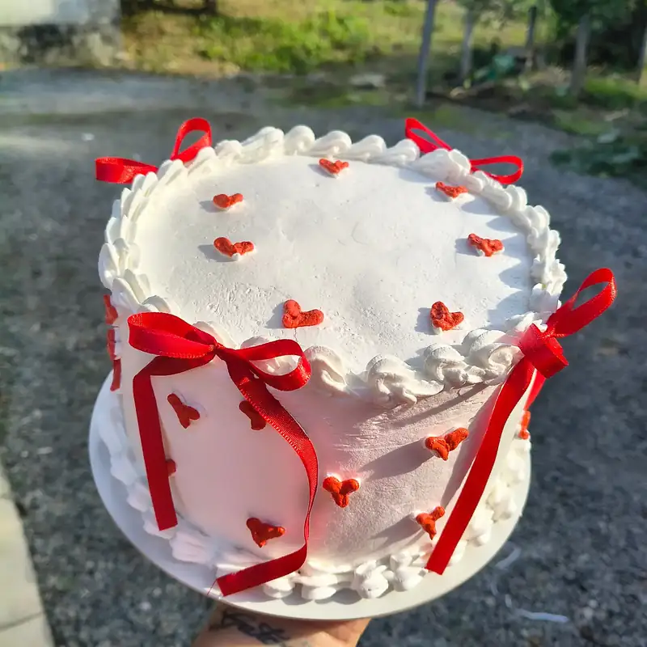
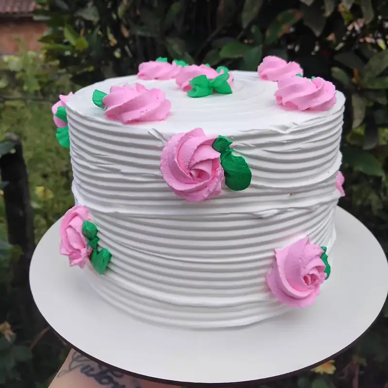

Bolo de aniversário decorado, com o kit de docinhos junto.
Dona Kiki Confeitaria Artesanal, em Joinville. Bolos, kit festas, doces tradicionais e personalizados. Encomendas sob reserva.

Bolos de aniversário
Laço de fita, rosas confeitadas, borboletas. Cada um é feito sob encomenda.




Kit festas e doces
Doces tradicionais e personalizados, nas cores do tema, para fechar a mesa junto com o bolo.
Pedir orçamento do kit festaEncomendas sob reserva
Chame no WhatsApp com a data da festa e o tema, e reserve o seu bolo.
Reservar pelo WhatsAppWhatsApp (47) 99668-6513